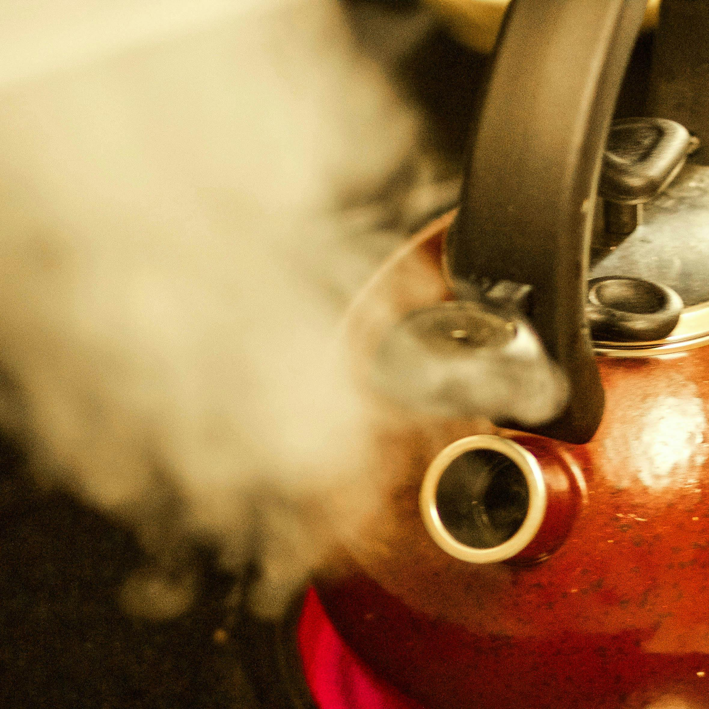
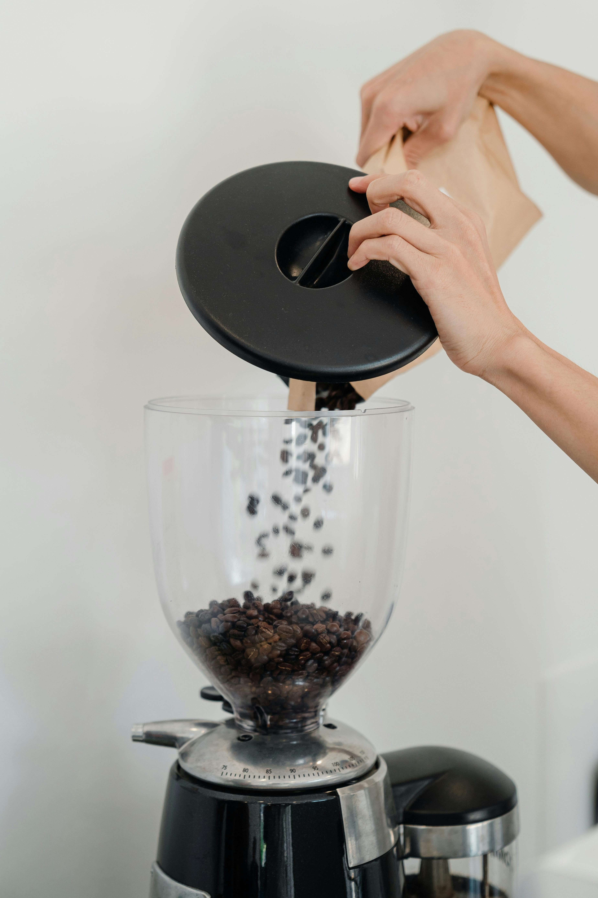
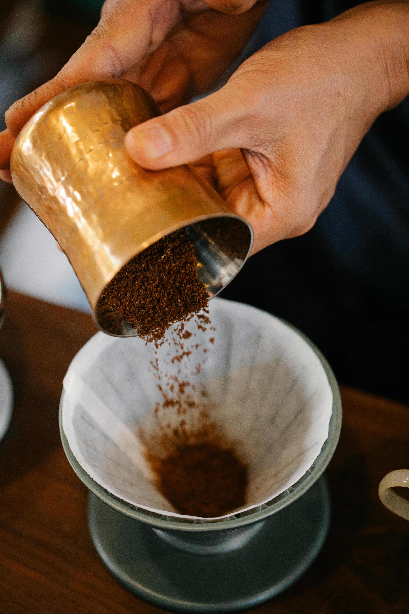

How To Make The Perfect Cup Of Pour Over Coffee
Within this section you will need to have a pour over coffee setup. This would include a filter, a glass container for the coffee, and a kettle for water, as well as a way to grind coffee beans.
Materials Needed
- Coffee Beans
- Water (Filtered or Spring)
- Grinder
- French Press, Drip Coffee Maker, or Pour Over Brewer
- Measuring Spoon
- Heating Device (Kettle)
Here is how to make a great pour over coffee:

Step 1: Boil water in a kettle.

Step 2: Grind beans into a table salt consistency.

Step 3: Use a filter in the brewer and pour hot water onto the filter to remove any paper residue.

Step 4: Add the grinding coffee grounds into the filter being level, and slowly pour the water when it is at 200°F. Stop pouring the water when the coffee starts to drip through.

Step 5: Keep slowly pouring the water, such as the step before for around 3-4 minutes and your coffee is ready.